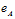
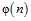
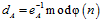
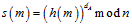
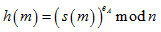

5.5.2. ЭЦП на основе алгоритма RSA
5.5.2. ЭЦП на основе алгоритма RSA
ЭЦП на основе алгоритма RSA в наибольшей степени соответствует общей схеме генерации ЭЦП, что обусловлено равноправностью закрытого и открытого ключа в этой схеме. ЭЦП на основе криптосистемы RSA очень похожа на шифрование, но отличается порядком применения ключей. Пусть абоненту A требуется подписать документ для отправки его абоненту B, тогда ЭЦП на основе алгоритма RSA будет состоять из следующих шагов:
1. Отправитель выбирает два больших простых числа p, q и находит их произведение, после этого вычисляет функцию Эйлера  для числа n .
для числа n .
2. Отправитель выбирает случайное число  взаимно-простое с  и вычисляет обратное ему число , при этом  − закрытый ключ абонента A, − открытый ключ абонента A, который доступен всем участникам информационного обмена.
− закрытый ключ абонента A, − открытый ключ абонента A, который доступен всем участникам информационного обмена.
3. Отправитель вычисляет электронную цифровую подпись для сообщения m и вычисляет ЭЦП как , где h(m) – хэш-функция от подписываемого сообщения. Цифровая подпись присоединяется к сообщению и передается вместе с ним в канале связи. Очевидно, что размерность используемой хеш-функции должна быть меньше использованного модуля n.
4. Получатель для проверки ЭЦП проверяет, выполняется ли равенство .
Данную схему вычисления ЭЦП можно немного усилить, если перед отправлением зашифровать цифровую подпись открытым ключом абонента B. Тогда проверка цифровой подписи становится доступной только для абонента B после выполнения ее расшифрования. Недостатком этой схемы является то, что одинаковым сообщениям будут соответствовать одинаковые ЭЦП, что в ряде случаев нежелательно. Свободной от такого недостатка является следующий алгоритм ЭЦП − алгоритм Эль-Гамаля.